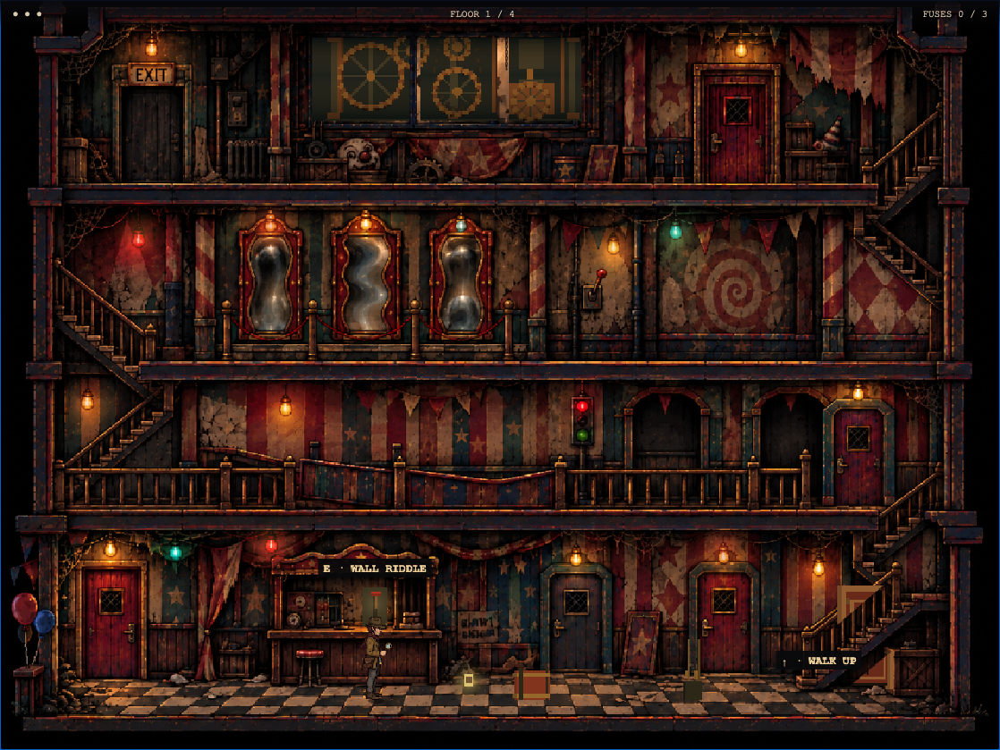
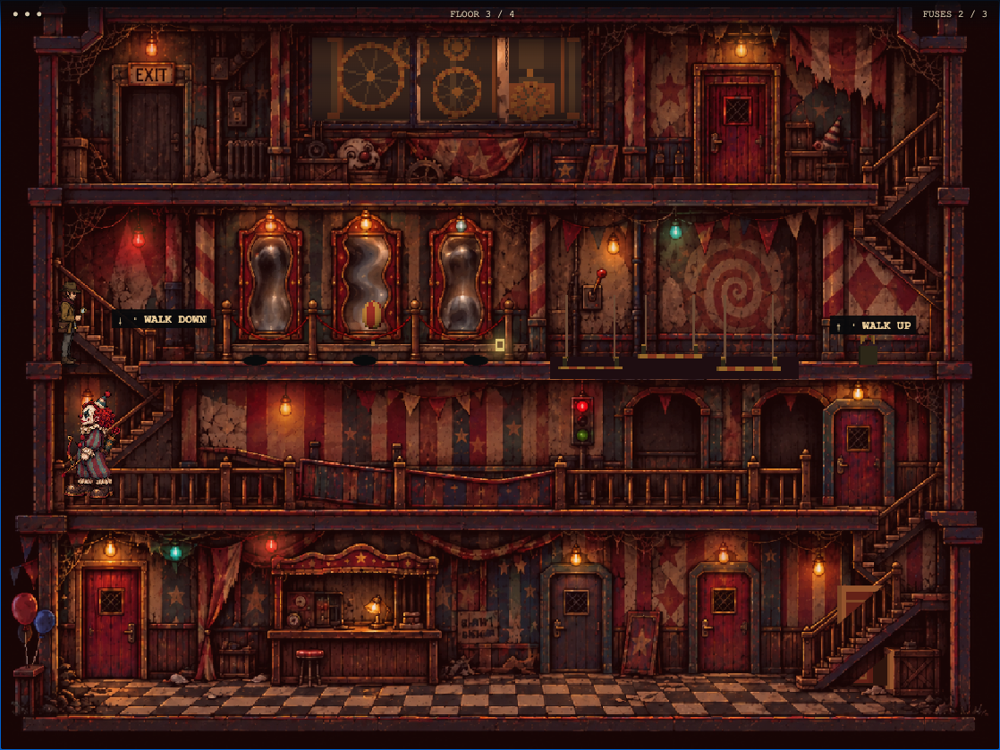

Play from the start · Mirror-floor checkpoint
The investigator is 80 pixels tall instead of 58, with a 100-pixel clown. Feet and floor props sit inside the rooms instead of on their front edges. Each painted floor has its own inset, shared by stairs, obstacles, moving platforms and hazard positions.


Complete escape test · Keyboard and touch checks · 89 model tests